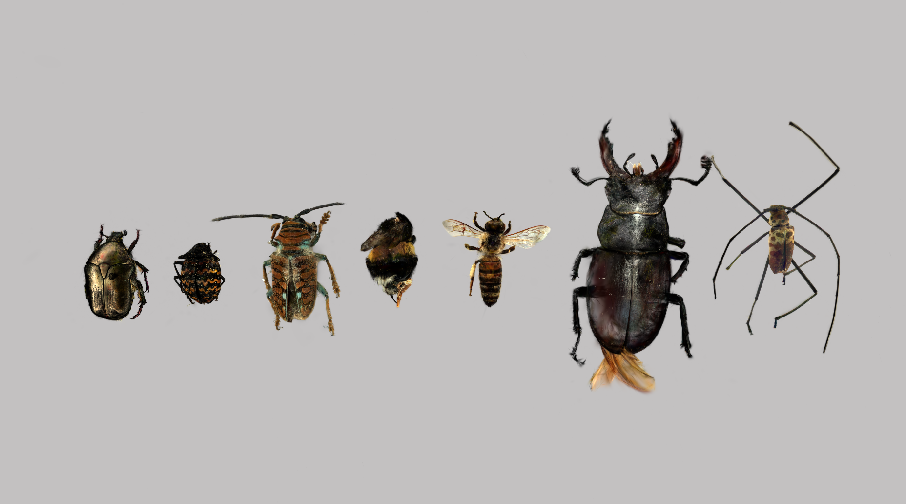

Le spécimen est photographié sous tous les angles à l'aide d'un objectif macro 35mm et un éclairage contrôlé avec LED et Flash.
Les photos sont recoupées et traités pour reconstruire la géométrie réelle du sujet en trois dimensions.
Le nuage de points obtenu est converti en splats gaussiens à travers un processus de training sur Lichtfeld Studio.
Le modèle final est exporté au format .spz et consultable directement dans le navigateur.
À noter : La restitution 3D présentée ici est en SPZ et non PLY, pour faciliter l'affichage dans le navigateur. Cela signifie que la qualité des textures et splats sont réduites (entre 50-70%) sur l'affichage 3D, les photos sont plus significatives de la qualité finale. Les modèles PLY sont disponibles sur demande.